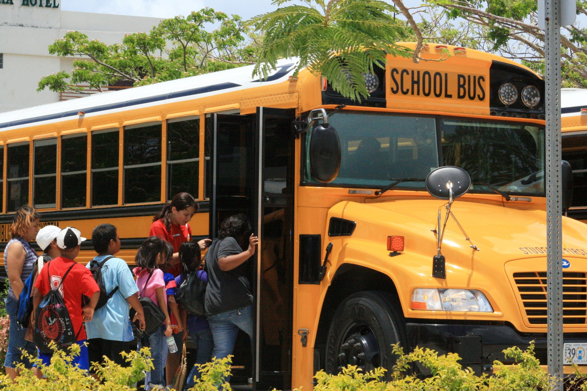

Add-ons for more learning about civics
Just like any other subject, sitting, listening to a teacher, providing assignments, and giving out homework isn't the only thing that can teach students about the subject.
Field Trips and Projects: Learning could be made more "hands-on" and explorational.

Computers: We could use better computers and more educational programs to enhance learning experience.

After School Programs: Clubs like recycling, newspaper, student council could be funded more effectively for further learning.